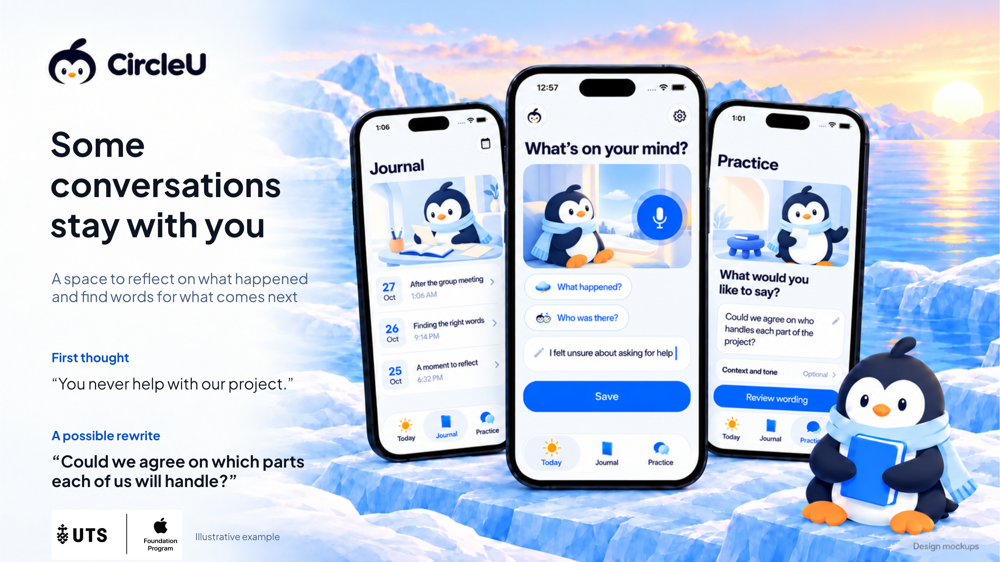

CircleU poster and motion
Updated phone artwork with the chosen headline and editable poster text

Camera-motion previews
Eight-second MP4 clips made from the saved artwork. These use gentle camera movement; Pingu’s body is still. Play each clip to review.
Artwork originals and prompts remain in BrandArtwork/ScreenScenes06 and ScreenScenes07. No native app screens were changed.